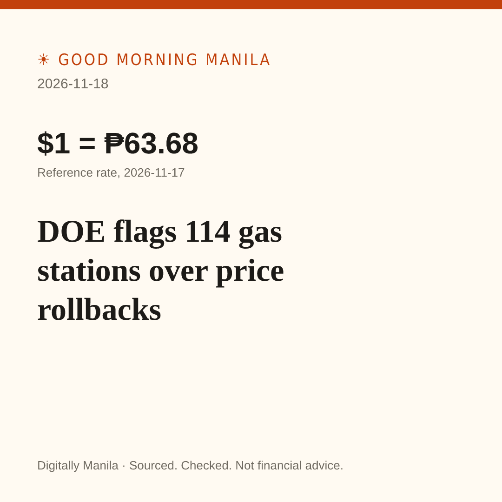

Post for Digitally Manila, 2026-11-18
Read it all first. Nothing here posts by itself. Edit freely.
1. Image

Save image On a phone: press and hold the image, then Save.

2. Short post (1,990 characters, no links)
3. First comment: sources (2,524 characters)
Post this as the first comment right after posting, so every claim keeps its source.